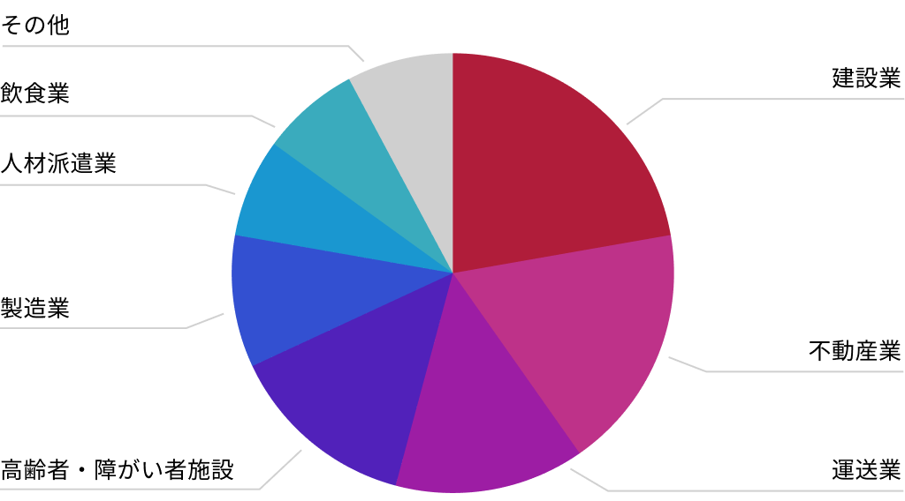
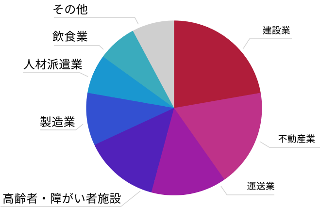

RECRUITE
CREATE
ANOTHER
FUTURE
法律家として、一個人として。
まだ見ぬ「もう一つのミライ」へ
Message
クライアントの未来に
本気で向き合える人
自分自身の未来を
大切にできる人
そんな人を法律事務所Sは
歓迎します
弊所では、企業法務から民事事件、刑事事件まで幅広いリーガルサービスを提供しており、すべての業務はクライアントの未来を支える重要な役割を果たしています。一つひとつの業務に真摯に向き合い、クライアントと共に豊かな未来を創造する意欲を持った方を歓迎します。
また業務だけでなく、自分自身の未来を描くことも尊重しており、弊所では独自のワークライフデザインを実現できる環境があります。柔軟な働き方やスキルアップの機会を提供し、夢や目標を全力でサポートします。
仲間やクライアントとともに、まだ見ぬ「もう一つのミライ」を創造しませんか。
Philosophy
事務所に関わるすべての人の
Well-Beingを目指して
私たちは事務所理念として「Three Well-Being」を掲げています。
クライアント、地域社会、そして事務所のクルー、弊所に関わる全ての人々とコミュニティが、健やかで満ち足りた状態でいられることを目指します。
この理念の実現のために、弊所はクルーが法律家として高い解決力を身につけられるよう、人材開発に力を注いでおります。そして、一個人として充実した人生が送れるよう働き方の多様性を認め、安定した労働環境の提供に努めております。
Culture
ワークライフバランスを実現できる
環境がここにはあります
弁護士やリーガルスタッフとして高い専門性を身につける一方、家庭や趣味の時間を大切にし、自分らしい働き方ができるようワークライフバランス実現を目指しています。
仕事も自分も大切に。法律事務所Sならきっと、あなたらしい働き方を見つけることができると信じています。
法律事務所Sが大切にする、
働き方の多様性
-
Work
高い専門性を身につけ、
それぞれの業務に専念できる環境先輩や仲間に相談しながら、チームで案件に取り組めます。また、職務経験に応じてOJTを取り入れ、スキルアップを応援します。人材開発・キャリアアップ支援により、高い専門性が身につけられます。
-
Life
ワークライフデザイン雇用制度を採用し、
その人らしい働き方を推進柔軟な勤務形態に対応し、多様な働き方を認め、家庭や趣味、リフレッシュのための時間を尊重し合います。福利厚生の充実、安定経営により、長く勤められる環境を提供します
DATA
データで見る法律事務所S
弊所の特徴をデータでご紹介します。
-
平均年齢
35.0歳若手から中堅の弁護士を中心に、年代や役職を超えて活発な交流が持てる職場です。
-
平均勤続年数
7.5歳創業に携わったクルーから新卒入所のクルーまで、定着率の高さが自慢です。
-
女性割合
25%男女ともに自身の能力やライフイベントに合わせた働き方を選択できます。
-
中途入所率
50%中途入所のクルーも多数活躍しています。 経験や能力に応じた業務をお任せします。
-
ワーキング
マザー率60%多様な働き方を推進する職場のため、家庭や育児との両立が可能です。
-
平均有給
取得日数9.5日有休は理由の如何に関わらず、個人の裁量で自由にとることが可能です。
-
顧客のビジネスカテゴリ
  -
勤務形態
固定時間制
裁量労働制職種や個人の希望に合わせて働き方を選択できます。
-
業務時間
（1日当り）約8.5時間繁忙期以外の残業はほとんどなく、定時出社・退社するクルーが大半です。
-
顧問企業数
185社多数の企業より信頼や紹介をいただき、相模原最大規模の顧問数を誇ります。
-
取扱業務内訳
- 企業法務
- 50％
- 不動産
- 20％
- 破産管財
- 10％
- 遺産分割・相続
- 7％
- その他
- 13％
企業法務を中心に、幅広い案件に携わることができます。
Time Schedule
出勤日の流れ
弁護士 谷樹人の事務所出勤日の1日の流れをご紹介します。
-
9:30 出社
通勤2時間程度かかるため、ワークライフバランス制度を利用し、出社時間を30分ずらしています。出社後、タスク整理、メールチェックを行います。

-
10:00 定例会議
ご依頼いただいている事件の進行状況を担当メンバーで確認共有します。
-
11:00 電話対応
クライアントへの進捗状況の報告、関係先からの架電に対する折り返しなど電話対応を行います。
-
12:00 昼食
近くのお店で購入したものを他の弁護士と事務所内で食べたり、外食したりします。
-
13:00 法律相談の実施
離婚・相続・交通事故等、様々なご相談があります。ひとつひとつ丁寧にご相談者に寄り添う対応を心掛けています。
-
14:00 裁判期日への出頭
WEB会議により事務所や自宅から期日に出頭することも増えていますが、調停や債権者集会など事件の内容によっては裁判所に出向くこともまだまだあります。
-
15:00 起案
裁判期日後の報告書、準備書面等の裁判書類、交渉書面など事件業務に関する様々な書面の起案を行います。読み手を意識した分かりやすい書面の作成を心掛けています。
-
17:00 委員会会務
神奈川県弁護士会本部、相模原支部それぞれの委員会に所属しており、毎月開催される委員会に参加します。今ではWEB会議で委員会を開催することがほとんどですので、事務所や自宅から参加することが可能です。

-
18:30 退社
Interview 先輩弁護士の声
弁護士としての理想やプライベートとの両立など、様々な理由で法律事務所Sを選んだ弁護士たち。彼らはこの事務所と仲間に出会えたからこそたどり着いた「もう一つのミライ」を歩いています。そんな先輩弁護士たちに聞いた、入所のきっかけや実際に働いてみて感じたことをインタビュー形式でご紹介します。

Job Description 募集要項
募集職種：弁護士
- 求める人物像
- クライアントの思いに共感し、ご相談やご依頼に真摯に向き合う方
- 応募条件
- 77期司法修習生・経験弁護士
- 採用予定人数（増員）
- 2名
- 勤務形態
- 勤務弁護士
- 取り扱い事件※個人案件の受任可
- ・企業法務
（契約書チェック、労働問題、債権回収、Ｍ＆Ａ、事業承継、知的財産権、監査役業務等）
・不動産
・破産管財
・後見・保佐・監督
・相続財産管理
・交通事故
・債務整理
・遺産分割などの相続
・離婚
・その他一般民事事件
・刑事（被害者支援）
- 勤務地
- 相模原本店（その他別拠点に異動の可能性あり）
- 勤務時間
- 9:00-18:00（休憩1時間）
※勤務時間は個別に相談可、テレワーク可
- 休日休暇
- 完全週休2日制（土日祝日）／夏季休暇（5日間）／
年末年始休暇（7日間）／創立記念日（10月1日）／
年次有給休暇 初年度10日（入所6ヶ月経過後）／
特別休暇（慶弔休暇、出産・育児休暇、介護休暇等）
- 給与
- 77修習生 年俸600万円＋業績に応じた賞与50～200万円
経験弁護士 年俸は経験による＋業績に応じた賞与50～200万円
- 昇給
- 年1回（業績による）
- 手当
- 通勤交通費全額支給
- 社会保険
- 健康保険、厚生年金保険、雇用保険、労災保険
- その他
- 弁護士会費（自己負担）
- 選考方法
- 1. 書類選考
2. 面接2回
3. 内定
- 必要書類
- 履歴書（写真貼付）
職務経歴書（アルバイト・社会人経験のある方）
大学及び大学院の成績証明書
司法試験成績通知書
予備試験成績通知書
- 採用お問い合わせ窓口
（書類送付先） - 〒252-0231
神奈川県相模原市中央区相模原2-1-5 サトウビル5階
法律事務所S 採用人事担当宛
（電話：042-704-6577 Email：jimu8@scs-lo.com） ※応募書類の返却はいたしませんので、ご了承ください。